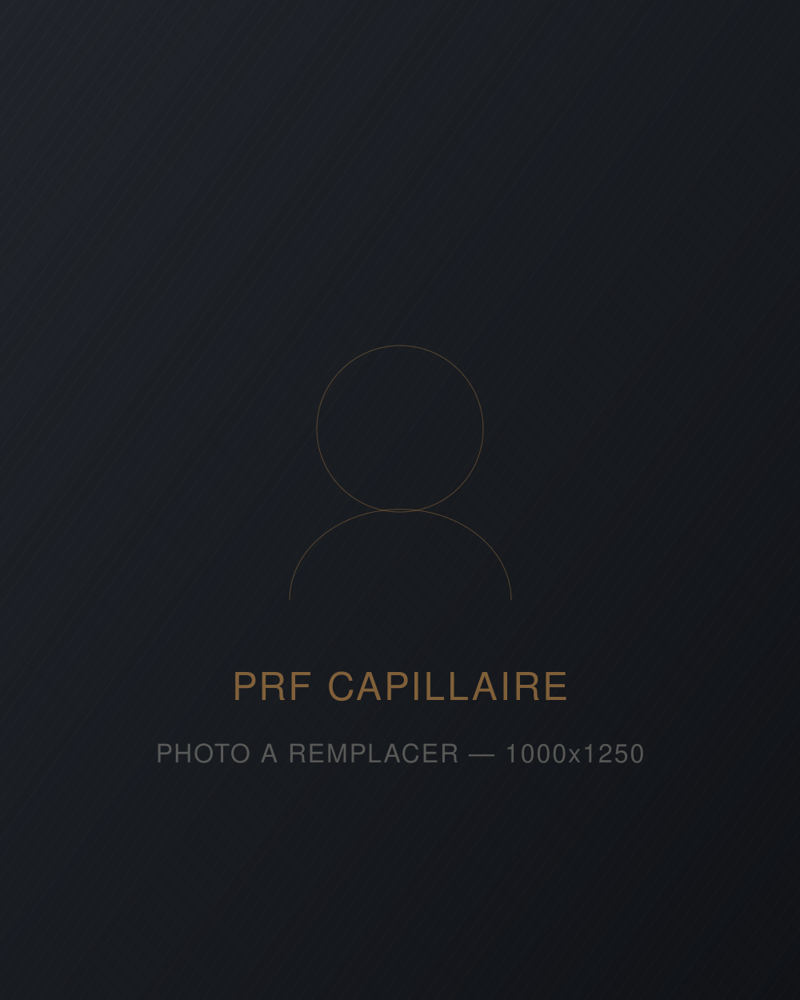
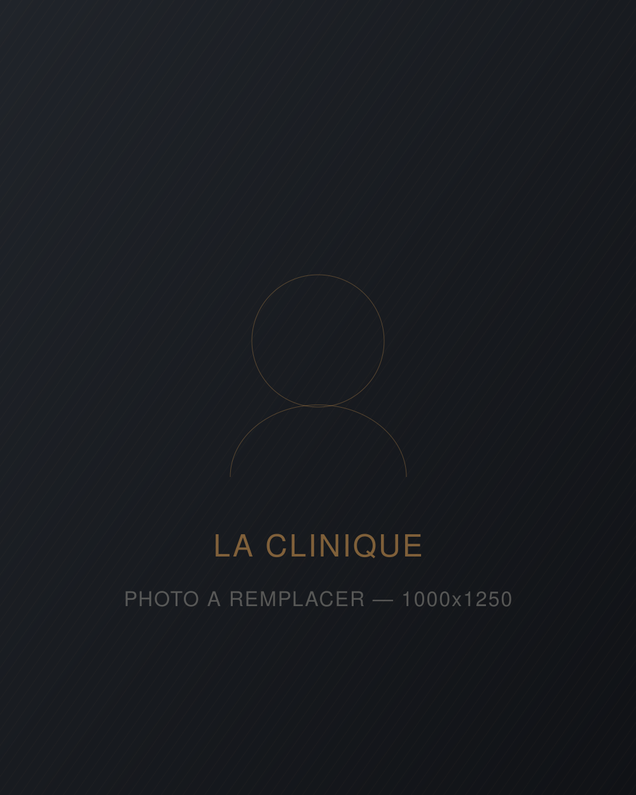

Concentration
2 à 5 fois plus de plaquettes
Le PRF présente une concentration de plaquettes environ deux à cinq fois supérieure à celle du PRP. Plus de plaquettes, c'est plus de facteurs de croissance disponibles pour la zone traitée.
Service 02 — Restauration capillaire
Votre propre sang, concentré en plaquettes et en fibrine, réinjecté dans le cuir chevelu. Aucun produit étranger, aucune convalescence — juste un signal biologique envoyé directement au follicule.

Le principe
Le PRF — fibrine riche en plaquettes — est une substance utilisée pour favoriser la guérison et la régénération des tissus. Elle provient de votre propre sang, prélevé puis traité pour isoler les plaquettes et la fibrine.
Ce concentré contient une forte densité de plaquettes chargées en facteurs de croissance. Ces facteurs stimulent la production cellulaire et la formation de nouveaux vaisseaux sanguins — c'est ce qui, au niveau du cuir chevelu, réveille des follicules affaiblis et améliore leur irrigation.
Comme le produit vient de vous, il n'y a ni corps étranger, ni risque de réaction allergique au produit lui-même.
PRF ou PRP ?
Le PRP existe depuis plus longtemps et reste efficace. Le PRF en est l'évolution : même matière première, préparation différente, comportement différent une fois injecté.
2 à 5 fois plus de plaquettes
Le PRF présente une concentration de plaquettes environ deux à cinq fois supérieure à celle du PRP. Plus de plaquettes, c'est plus de facteurs de croissance disponibles pour la zone traitée.
Lente, à basse vitesse
La centrifugation lente permet aux globules blancs et aux cellules souches de rester dans la couche plaquettaire au lieu d'être écartés. On préserve ainsi davantage d'éléments cicatrisants.
Rien d'ajouté au prélèvement
Le PRP contient un anticoagulant, le PRF non. C'est ce qui permet au sang de former naturellement une matrice de fibrine spongieuse — la structure qui distingue les deux traitements.
Une semaine plutôt que quelques heures
La matrice de fibrine agit comme un réservoir : elle relâche progressivement les facteurs de croissance pendant environ une semaine, là où le PRP les libère en quelques heures. Le signal envoyé au follicule dure donc bien plus longtemps.
Indications
Le PRF ne fait pas repousser des cheveux là où le follicule est mort. Il agit sur les follicules affaiblis mais encore vivants — d'où l'importance de traiter tôt.
Épaissir des cheveux devenus fins et cassants, et augmenter le nombre de cheveux en phase de croissance active sur les zones qui se dégarnissent.
Alopécie androgénétique débutante, chute liée à un changement hormonal, au stress, à une carence ou à une médication : le PRF vise à freiner la progression.
Meilleure vascularisation, meilleure qualité du tissu autour du follicule. C'est le terrain qui est traité, pas seulement la tige du cheveu.
Utilisé en complément d'une greffe, le PRF soutient la prise des greffons et stimule les cheveux natifs restants dans les zones voisines.
Le PRF est nettement plus efficace sur une alopécie légère à modérée que sur une calvitie avancée. Si le follicule n'est plus fonctionnel, aucun facteur de croissance ne le relancera — dans ce cas, c'est la greffe FUE qui est indiquée. On vous le dira franchement en consultation.

Êtes-vous un bon candidat ?
Certaines conditions demandent une évaluation plus poussée : troubles de la coagulation, prise d'anticoagulants, maladie auto-immune, infection active, traitement anticancéreux en cours. Mentionnez toute médication dès la consultation.
Le déroulement
La consultation et le traitement peuvent se faire le même jour. Comptez environ 30 à 45 minutes pour les injections, une heure au total avec la consultation.
Discussion de vos objectifs, examen du cuir chevelu, documentation photographique de référence, revue des risques et bénéfices, instructions avant et après le traitement.
Une prise de sang standard, comme au laboratoire. Le tube part immédiatement en centrifugeuse.
Centrifugation à basse vitesse pour séparer les plaquettes et le plasma des globules rouges, puis formation du caillot de fibrine dans un dispositif dédié.
Application d'une crème anesthésiante topique, puis micro-injections réparties sur les zones ciblées du cuir chevelu. Vous repartez et reprenez vos activités le jour même.
Après la séance
Rougeurs, léger gonflement et parfois de petites ecchymoses aux points d'injection : c'est fréquent et ça se résorbe en quelques jours. Des compresses froides aident. Évitez les efforts intenses, la chaleur excessive et les produits coiffants agressifs pendant 24 à 48 heures.
Si une rougeur s'aggrave, si une douleur persiste ou si de la fièvre apparaît, contactez-nous. Ce sont des situations rares, mais elles se gèrent tôt.
Tarifs
Le PRF ne se juge pas sur une séance isolée. Le protocole standard comprend trois traitements espacés, puis un entretien selon les résultats obtenus.
Consultation, évaluation du cuir chevelu, prélèvement, préparation du PRF et injections.
549$Séance 1
Poursuite du protocole. Le médecin ou l'infirmière ajuste les zones ciblées selon la réponse observée.
549$Séance 2
Séance finale du protocole de base, à tarif réduit. C'est à partir de là qu'on évalue le maintien.
449$Séance 3
Le PRF est un traitement électif : il n'est pas couvert par la RAMQ ni par les régimes d'assurance privés. Les séances d'entretien au-delà du protocole initial sont établies au cas par cas — on en discute une fois vos résultats mesurés, pas avant. Taxes applicables le cas échéant.
Résultats
La texture du cheveu change souvent en premier — il paraît plus épais, plus vivant. La densité, elle, se mesure plus tard : les premiers changements observables surviennent généralement entre la huitième et la douzième semaine, parce que le cycle de croissance du cheveu ne s'accélère pas sur commande.
Les résultats se maintiennent avec un entretien périodique. Sans entretien, l'effet s'estompe progressivement, puisque la cause sous-jacente de la chute, elle, ne disparaît pas.
Ce que le PRF ne fera pas : recréer une ligne frontale, remplir une zone complètement dégarnie, ou remplacer une greffe. Quiconque vous promet le contraire vous vend autre chose que de la médecine.
Qui vous traite
Infirmière injectrice — médecine esthétique
C'est elle qui réalise nos injections de PRF, ainsi que les traitements de neuromodulateur et de comblement. Une injectrice d'expérience, formée en médecine esthétique, qui travaille en collaboration directe avec nos médecins.
Ce qui compte dans une injection, ce n'est pas seulement le produit : c'est la maîtrise de l'anatomie, la profondeur du geste, la répartition des points et la gestion des risques. C'est aussi la capacité de dire non quand un traitement n'est pas indiqué.
Questions fréquentes
Une crème anesthésiante topique est appliquée avant les injections. La plupart des patients décrivent une sensation de pression ou de picotement plus qu'une douleur. La séance d'injections dure environ 30 à 45 minutes.
Le protocole de base comprend trois séances. Selon l'ampleur de la chute et votre réponse au traitement, un entretien périodique est ensuite recommandé pour maintenir les acquis. Le nombre exact se détermine à l'évaluation, pas à l'avance.
Oui. Le retour aux activités est immédiat. Vous aurez probablement des rougeurs pendant quelques heures et parfois de petites ecchymoses aux points d'injection, qui disparaissent en quelques jours.
Les deux sont efficaces. Le PRF a l'avantage d'une concentration plaquettaire supérieure et d'une libération prolongée des facteurs de croissance sur environ une semaine, contre quelques heures pour le PRP. C'est pourquoi nous privilégions le PRF pour le cuir chevelu.
Oui, et c'est souvent recommandé. Le PRF soutient la prise des greffons et stimule les cheveux natifs restants autour de la zone greffée. Le médecin établit le calendrier des séances par rapport à la date de l'intervention.
Non. Il s'agit d'un traitement électif, non couvert par la RAMQ ni par les régimes privés. Les tarifs sont affichés en toute transparence sur cette page pour que vous puissiez planifier votre budget.
Le PRF est généralement considéré comme sûr lorsqu'il est administré par un professionnel qualifié, notamment parce qu'il provient de votre propre sang. Les effets les plus courants sont le gonflement, les ecchymoses et les rougeurs au site d'injection. Comme pour toute injection, un risque d'infection existe : les instructions post-traitement servent précisément à le réduire.
Cette page est informative et ne constitue pas un avis médical. Les résultats varient d'une personne à l'autre et aucun résultat ne peut être garanti. Une évaluation préalable détermine si le traitement est indiqué dans votre cas.
Prochaine étape
Le PRF agit sur les follicules encore vivants. Plus vous attendez, moins il en reste à sauver.